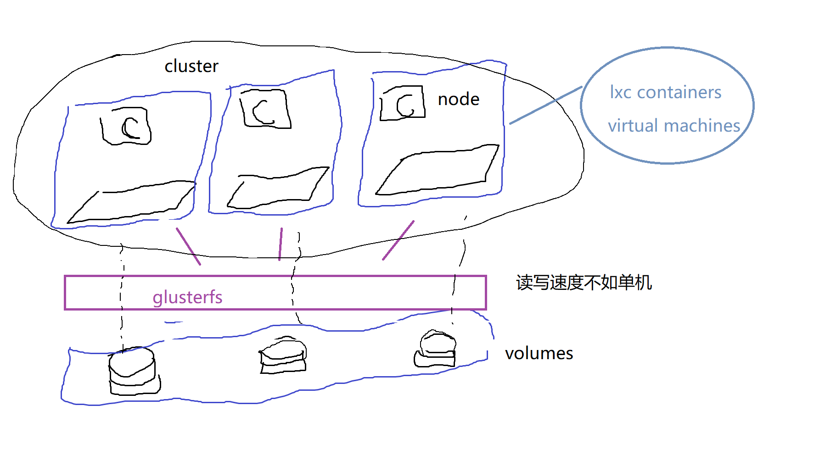

proxmox-宝宝的第一个homelab解决方案
前言
-
由于之前接触linux比较多, 然后又听yxc大佬说云计算是趋势, 然后机缘巧合接触了lxc这种, 在所有东西水到渠成之后, 好像发现自己已经走向了homelab玩家的道路, 索性就上promox(pve), 一个完备的homelab解决方案
-
所以习惯性的算homelab入门吧, "hello, world!"
基础概念扫盲
- datacenter: 顶级概念, 其实没啥意义
- node: 在pve中指的是一个物理机
- cluster: 在pve中指的是物理机的集合, 和k3s不同, 这里的cluster主要是为了实现多个物理机的vms和cts的pve共同管理和共享资源提出的概念
- pod: 在k8s中指的是一个基础服务单元
安装
- 不对安装过程做介绍了, 太小白了, proxmox iso + balenaEtcher搞定
添加非订阅源
由于没有订阅, 所以无法使用官方的订阅源, 所以我们需要删除原来的订阅源, 添加免费源
rm /etc/apt/sources.list.d/pve-enterprise.list echo 'deb http://download.proxmox.com/debian/pve buster pve-no-subscription' >> /etc/apt/sources.list.d/pve-no-subscription.list apt update
网络设置
由于初始填写的ip是非法的, 然后又不能选dhcp, 所以需要先对网络进行一定设置, 选择dhcp
# /etc/network/interfaces
auto lo
iface lo inet loopback
iface enp2s0 inet manual
auto vmbr0
iface vmbr0 inet dhcp
bridge-ports enp2s0
bridge-stp off
bridge-fd 0
然后
systemctl restart networking
添加图形化界面
pve默认没有图形化界面, 我们需要通过tasksel选择安装图形化界面, 这里选择了KDE
tasksel # 然后空格选择kde, tab选择OK
由于debian默认不给root图形化登录, 所以我们创建一个非root用户
useradd -m dell -g root -s /bin/bash -d /home/dell passwd dell reboot # 完成后重启
最后需要设置Power选项,
-
把"Blank screen"和"Automatic suspend"改成"Never"
-
把"When then Powert Button is pressed"成"Nothing"
-
Details > Users 设置免密自动登录
值得注意, 2k的KDE视频输出显示器需要插显卡的hdmi口, 否则无法正常显示
概览
好多东西可能需要以后慢慢填, 所以在这里介绍一下proxmox到底是个什么吧
不多说, 先上灵魂画图

总的来说, 这个东西其实提供了一个搭建集群的框架
几个重要的点:
- Cluster: 这里用来管理集群
- Ceph: 分布式的文件系统
- Storage: 管理所有的文件系统, 包括非分布式文件系统
其他
没有其他了